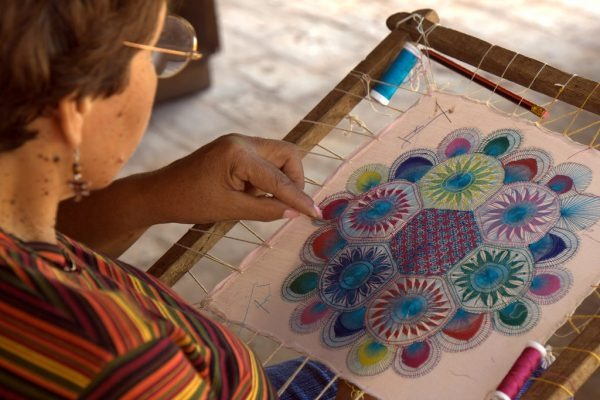

Textil Sagrado
Ñandutí
Encaje tradicional paraguayo elaborado de forma artesanal, caracterizado por sus diseños circulares y delicados patrones que emulan la tela de una araña. Representa uno de los símbolos textiles más emblemáticos del país.